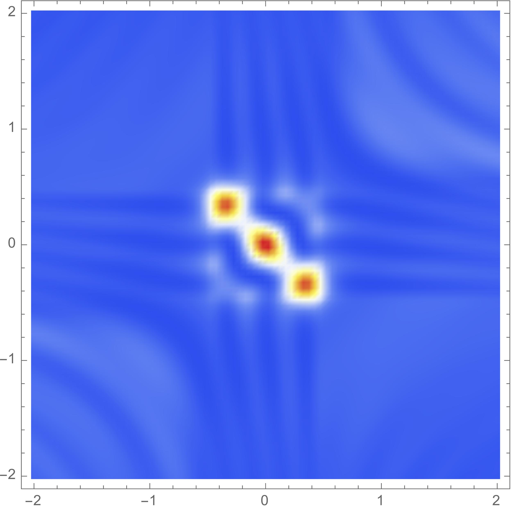

Contact
Higgs Centre for Theoretical Physics
University of Edinburgh
Edinburgh, EH8 9YL
Scotland
Benjamin.Hertzsch@ed.ac.uk
Research
Here you can find more about my research projects, all of which are done in collaboration with my advisor Dr Job Feldbrugge.
Please check back soon for detailed pages on the projects listed below.
Caustic Skeleton & Cosmic Web
Cosmic structure formation weaves the dark and baryonic matter into an intricate multiscale network commonly referred to as the cosmic web. In this project, we investigate the geometry and dynamics of the evolving cosmic web through the language of catastrophe theory. The caustic skeleton model allows us to study cosmological structure formation on an unprecedented analytical level, with questions ranging from the statistics of the primordial fields to constrained N-body simulations for cosmic web environments. Further collaborators to this project are Maé Rodriguez (student in Edinburgh), and Prof. Dr Rien van de Weygaert.
Caustics in quantum-mechanical path integrals

The path integral formulation of quantum mechanics provides an elegant approach to problems involving the dynamical evolution of quantum states. In this project, we investigate to what extent quantum mechanical path integrals are characterised by the underlying classical paths and their caustics. A surprising finding of previous studies is that both real and complex classical paths are key to understanding quantum dynamics. This project is done in collaboration with Prof. Dr Ue-Li Pen.
Oscillatory integrals and efficient numerics
Oscillatory integrals are ubiquitous in physics, but notoriously difficult to evaluate using convential numerical methods. Closely related to the study of catastrophes is the so-called Picard-Lefschetz theory, which provides an elegant method to evaluate oscillatory integrals in the complex plane. In this project, apply the methods of Picard-Lefschetz theory to the efficient numerical evaluation of cosmological projection integrals.